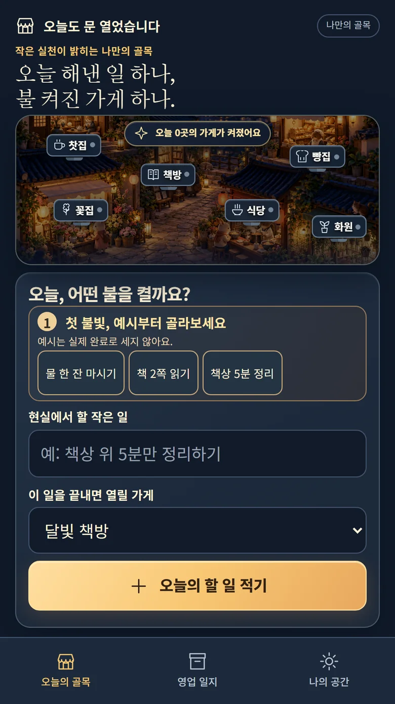
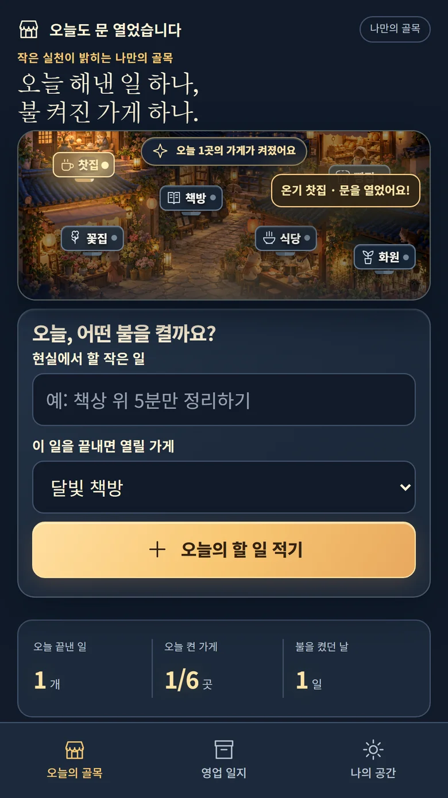
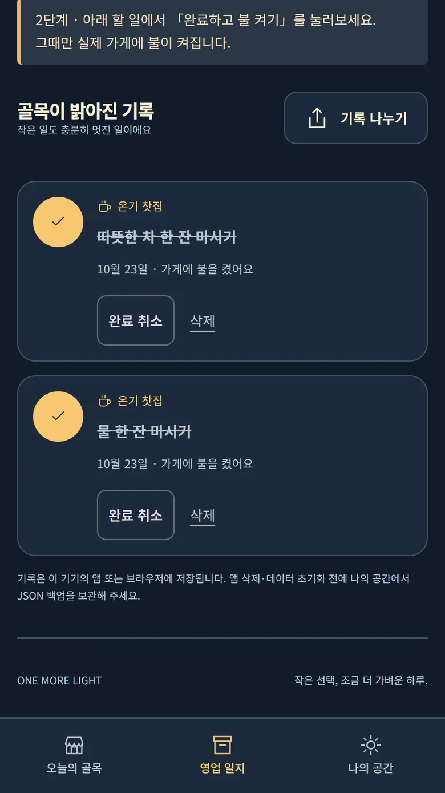

오늘 할 일 한 가지
할 일이 거창할 필요는 없어요. ‘물 한 잔 마시기’처럼 작은 실천부터 시작하세요.
시작은 언제나 무료✦ 당신의 하루를 비추는 작은 가게들
물 한 잔, 책 한 쪽. 작은 일을 끝낼 때마다 나만의 밤 골목에 따뜻한 불이 켜집니다.
Android 무료 체험판 직접 설치 제공 중. 원스토어 · 구글 플레이 · 토스 앱인토스 공식 출시 준비 중이며, 현재 유료 결제는 제공하지 않습니다.
바로 할 수 있는 일 하나를 적어 보세요.
여섯 가게의 서로 다른 불빛을 밝혀요.
영업 일지와 JSON 백업으로 돌아볼 수 있어요.
HOW THE LIGHTS COME ON
기록 → 완료 → 점등. 오늘의 실제 행동이 움직임과 빛으로 이어지는 간단한 루틴입니다.
할 일이 거창할 필요는 없어요. ‘물 한 잔 마시기’처럼 작은 실천부터 시작하세요.
시작은 언제나 무료완료 버튼을 누르면 해당 가게의 간판과 창문이 따뜻하게 빛납니다.
가게마다 다른 조명어제의 작은 성취도 기록으로 남아요. 하루의 가게 불빛은 다음 날 새로 시작됩니다.
기록은 기기에 저장REAL PRODUCT SCREENS
개발용 테스트 기록으로 촬영한 실제 Chrome 화면입니다. 스토어 설치 화면이나 실제 사용자 성과를 나타내지 않습니다.

복잡한 설정 없이 첫 번째 할 일을 바로 적을 수 있어요.

실제로 끝낸 일 하나가 따뜻한 골목의 변화로 돌아옵니다.

영업 일지에서 내가 완료한 일을 돌아볼 수 있어요.
A LITTLE GOOD DAY
기본 할 일·점등·영업 일지·백업 기능은 무료입니다. 기기간 자동 동기화와 유료 결제는 아직 제공하지 않습니다.
QUESTIONS & ANSWERS
현재는 웹 체험이 제공됩니다. 세 스토어에 올릴 Android 앱과 토스 미니앱은 별도 준비 중이며, 실제 출시가 확인되기 전까지 스토어 설치 링크를 표시하지 않습니다.
현재 앱은 기록을 해당 기기의 브라우저 또는 앱 저장공간에 보관합니다. 기기간 자동 동기화가 없으므로 기록을 옮기거나 앱을 삭제하기 전 JSON 백업을 별도로 저장해야 합니다.
현재 제공 중인 할 일 기록, 가게 점등, 영업 일지와 JSON 백업 기능은 무료입니다. 출시 후 추가 꾸미기 상품은 아직 확정·판매되지 않았습니다.
완료한 일은 각각 기록되지만, 같은 날 같은 가게에 불이 켜진 횟수는 한 곳으로 집계됩니다. 다음 날에는 새로운 골목 조명이 시작됩니다.